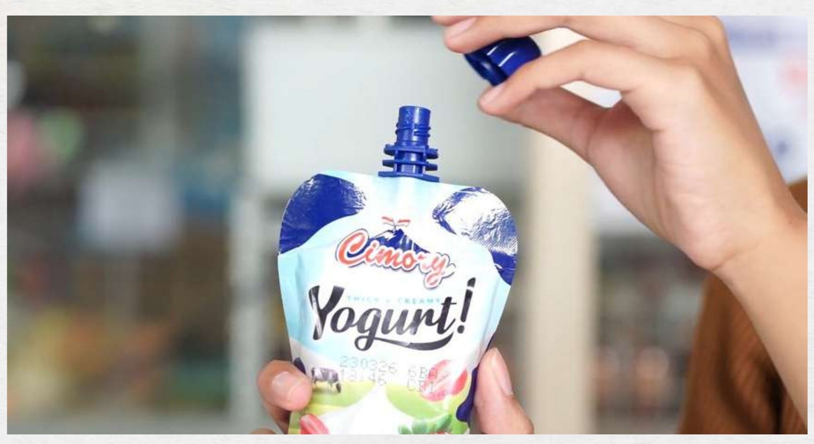

Television CommercialTVC — Cimory Squeeze Yogurt
Coordinated production flow for a student video-production project built around Cimory Squeeze Yogurt, from pre-production research through production and post-production delivery. Role: production coordination across all three phases.
Watch on YouTube